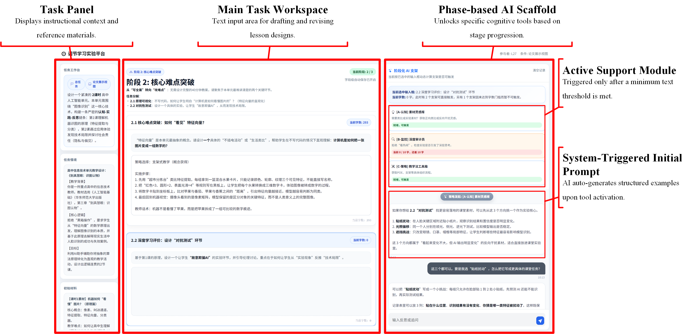
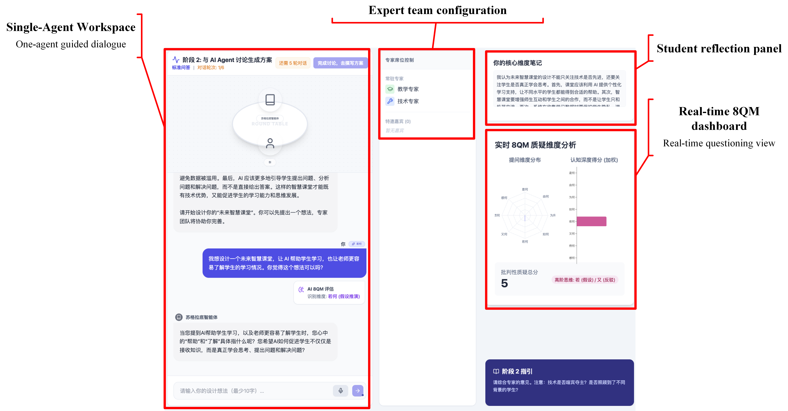
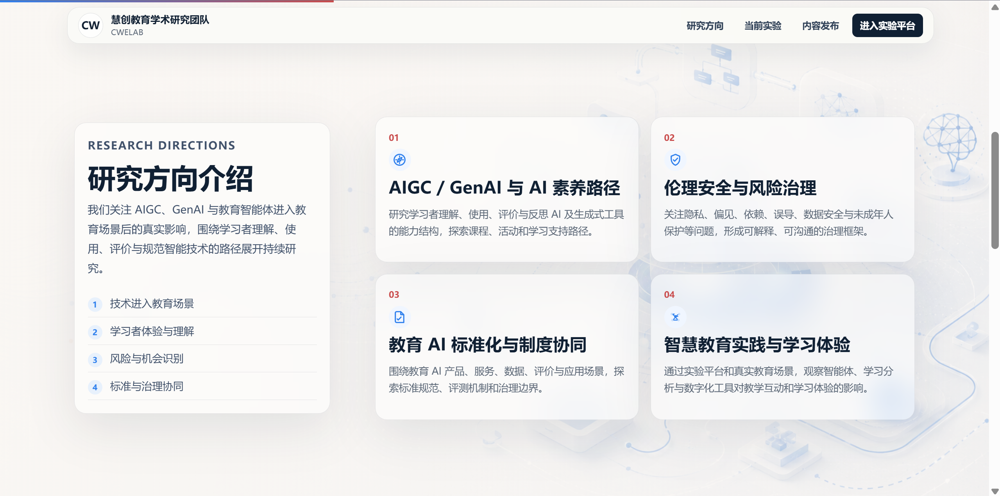
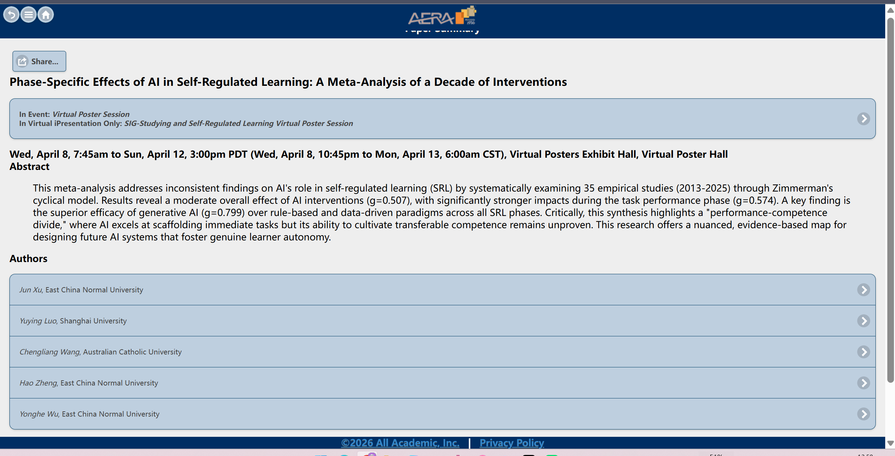

自我调节与人机共同调节
考察智能支架如何影响预思、执行与反思，并关注支架撤除后的策略留存与远迁移。
Educational technology · Human-centered AI
我是徐俊，华东师范大学教育技术学硕士研究生。我的研究聚焦教育人工智能、学习分析与自我调节学习，关注智能系统如何支持学习者形成可迁移的能力，而不仅是完成眼前任务。

Research questions
围绕“技术支持—学习过程—能力迁移”的证据链，连接学习科学理论、教育智能体设计与实证验证。
考察智能支架如何影响预思、执行与反思，并关注支架撤除后的策略留存与远迁移。
把元认知监控、认知冲突与策略指导转译为可计算的智能体角色、规则与工作流。
结合行为日志、对话文本与交互序列，解释技术干预在学习过程中何时、如何发生作用。
综合运用准实验、元分析与结构模型，识别教育技术的平均效应、边界条件及机制差异。
Published work
论文按博士申请简历顺序排列；点击“站内阅读全文”可直接查看对应出版版本。
Work in progress
仅展示期刊送审状态截图，不公开匿名稿全文。
Research projects
从项目申报、实验方案与平台路线，到标准草案、结题案例与验收材料，承担能够落到具体产出的研究工作。
Research capabilities
具备从理论建模、实验设计和平台开发，到过程数据分析与英文论文写作的完整研究经验。


Education & academic practice

教育信息技术学系学术型硕士，推免入学；GPA 3.47/4，硕士导师为吴永和研究员。
本科 GPA 3.98/5，年级 1/32；浙江省优秀毕业生、省政府奖学金、高等数学竞赛国家二等奖等。
围绕 AI 支持自我调节学习的阶段性效应开展国际学术交流。
为 Journal of Educational Computing Research、Information Processing & Management 等期刊完成 21 次同行评审；指导同组本科生完成毕业设计。
具备英文论文写作、审稿与国际会议汇报经验。